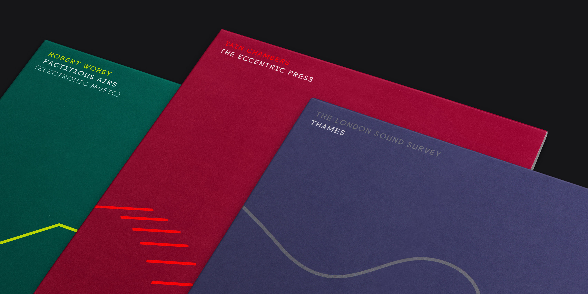

Top-to-bottom art direction for new record label Persistence of Sound — providing a home for field recordings and musique concrète.
In 2017 I was approached by composer and producer Iain Chambers, and commissioned to create the identity for his new project, an independent record label specialising in field recordings and musique concrète. What started off as a logo and a set of record covers escalated into one of my most comprehensive projects to date.